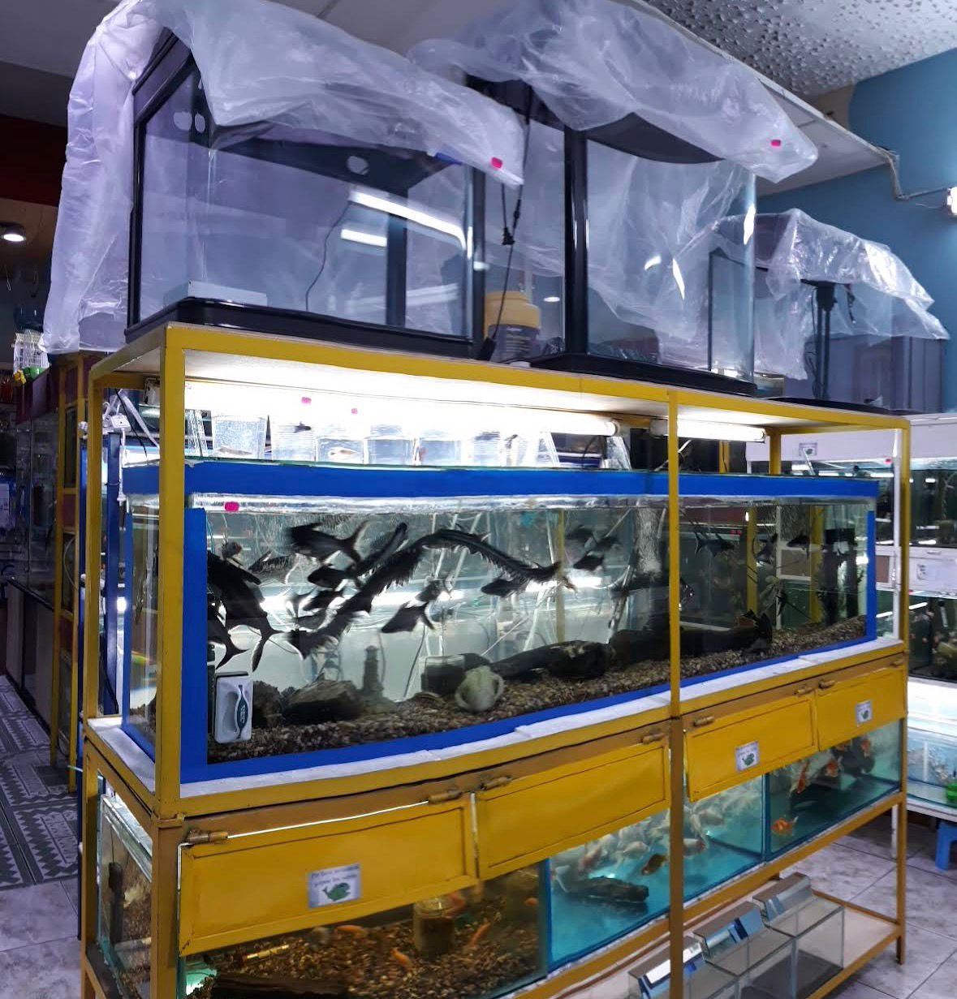
Exhibición de Especies
Gran variedad de peces ornamentales y tropicales en entornos controlados y saludables.
Expertos en peces ornamentales y tropicales en el corazón de Latacunga.
Ubicados en el Pasaje García, somos tu local especializado en el mundo de la acuariofilia. Contamos con una amplia variedad de acuarios donde podrás apreciar la belleza de diversas especies ornamentales y tropicales.

Gran variedad de peces ornamentales y tropicales en entornos controlados y saludables.
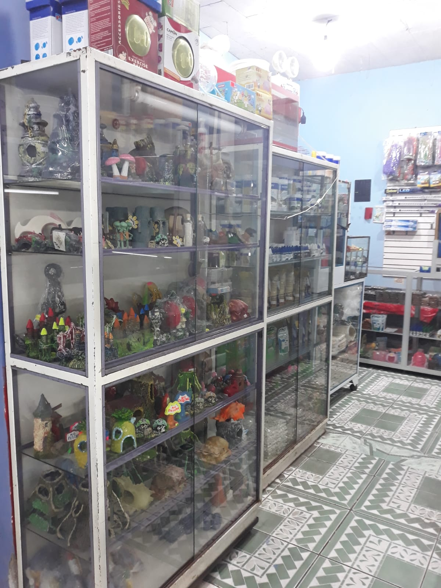
Te enseñamos paso a paso cómo cuidar correctamente a tus nuevas especies y mantener tu acuario.
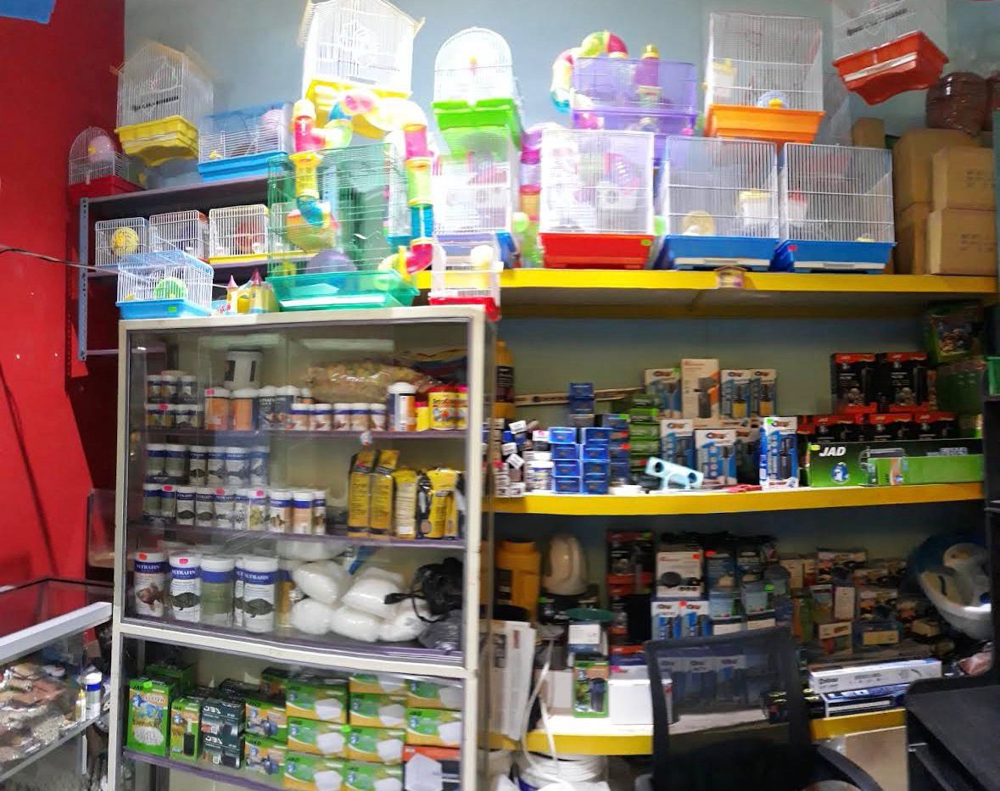
Todo lo necesario para montar tu propio ecosistema acuático en casa.
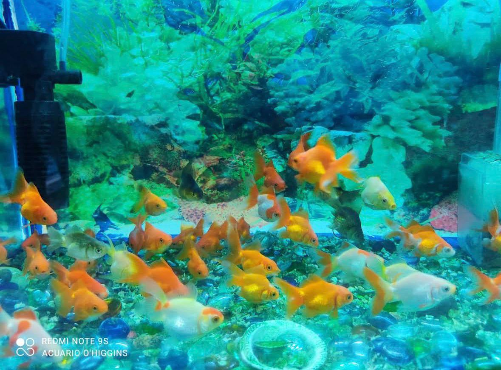
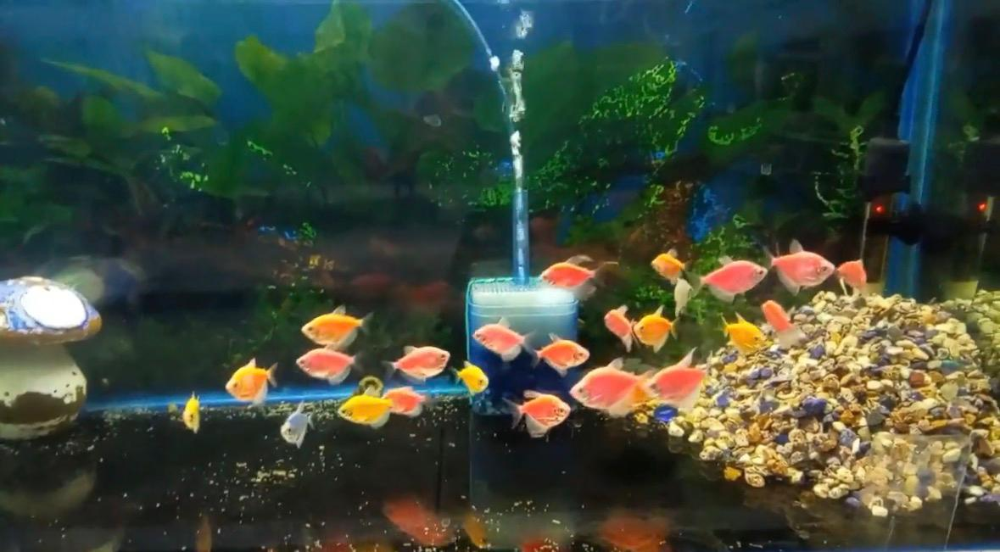
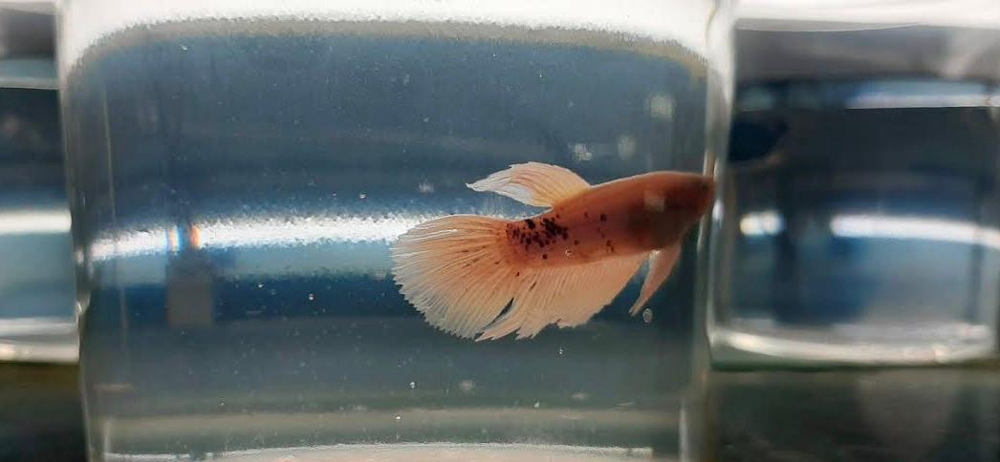
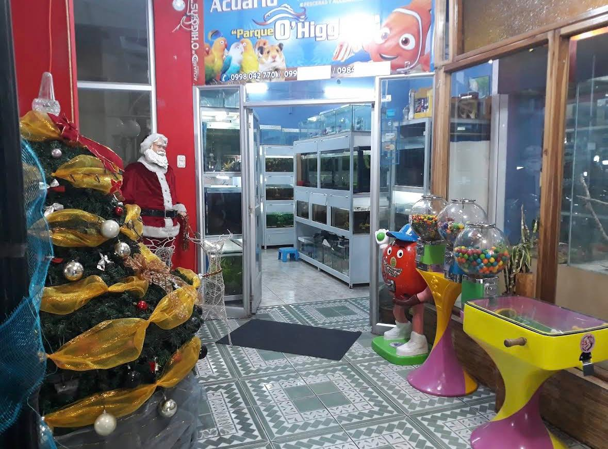
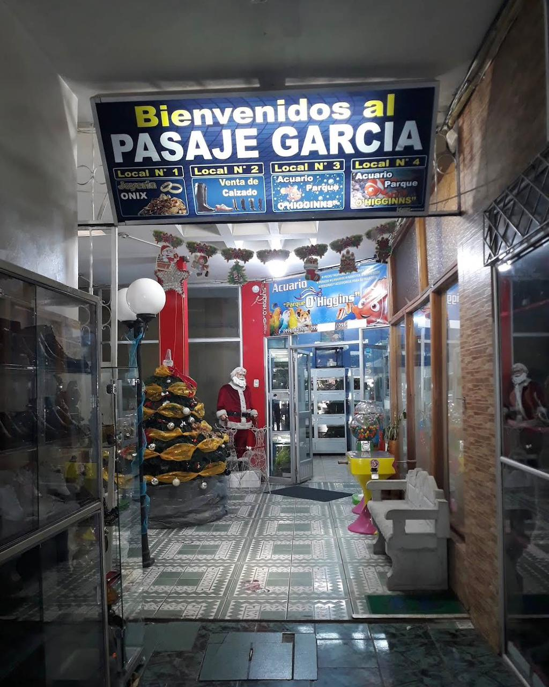
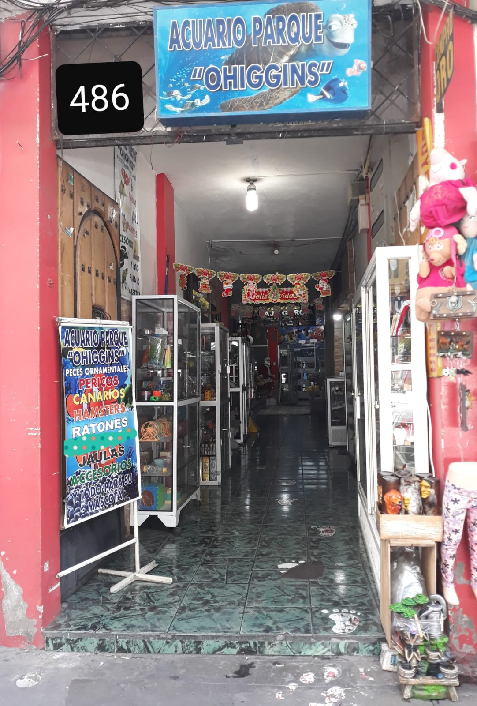
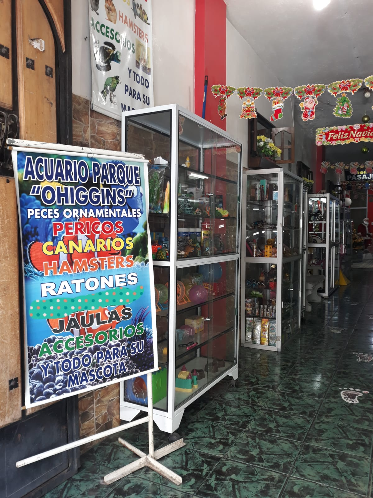
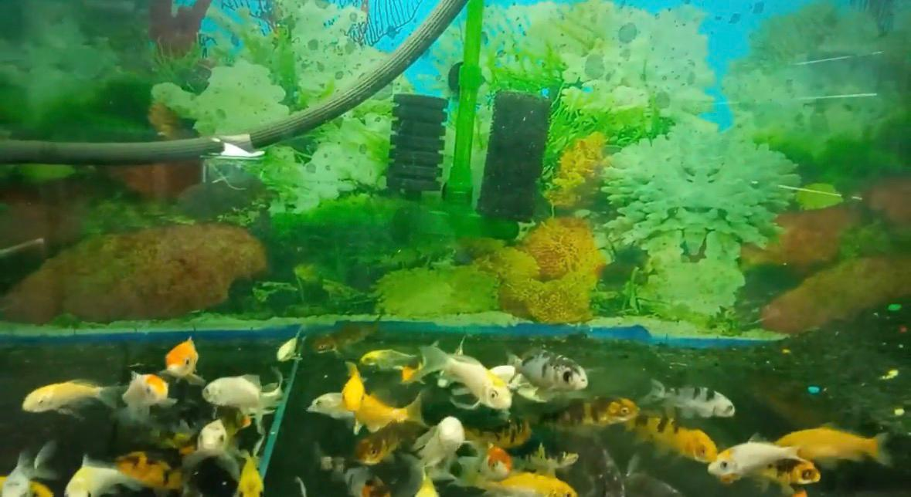
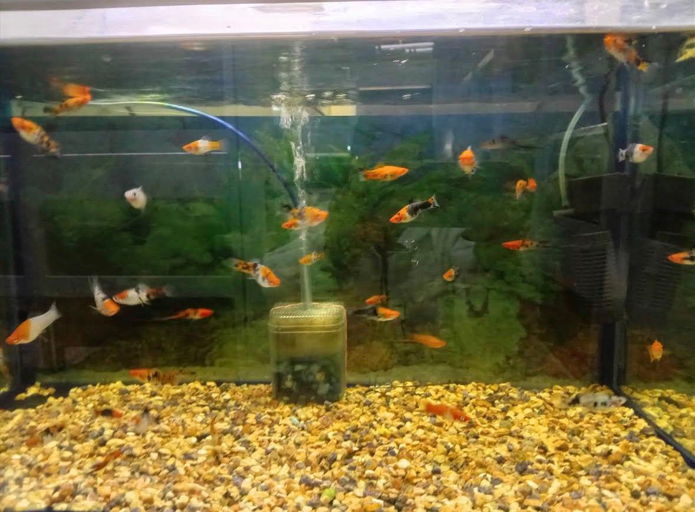
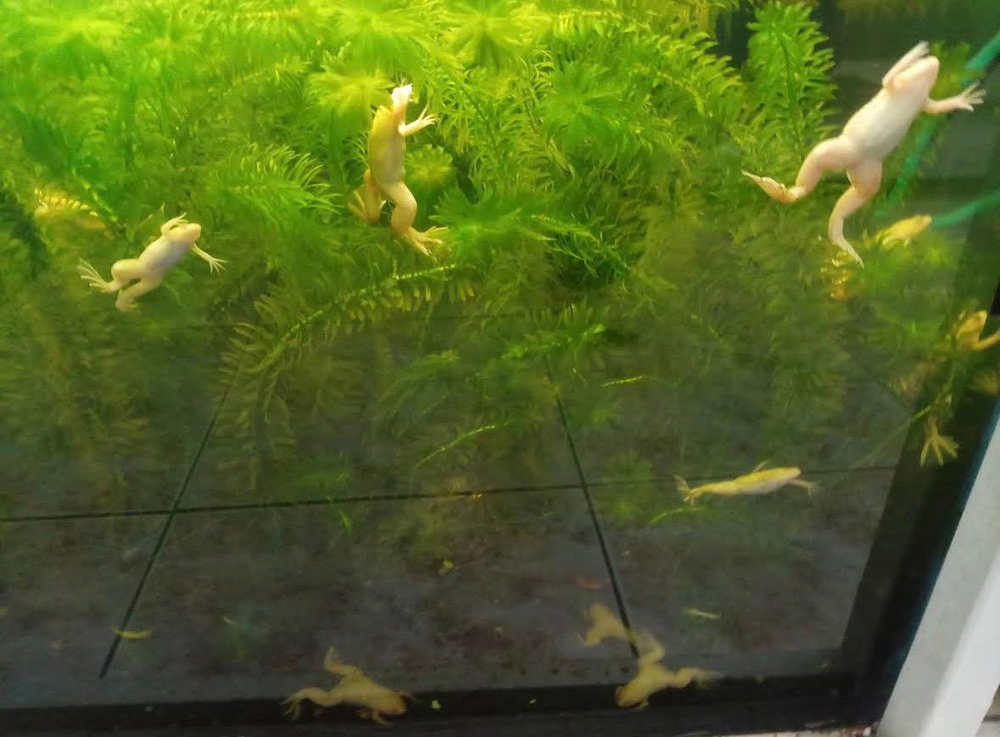
No solo vendemos peces, nos apasiona que vivan bien. Te explicamos los parámetros del agua, alimentación y convivencia entre especies.
| Día | Horario |
|---|---|
| Lunes a Sábado | 09:00 AM - 07:00 PM |
| Domingo | CERRADO |
Calle Juan Abel Echeverría y Belisario Quevedo, Pasaje García.
Latacunga, Ecuador